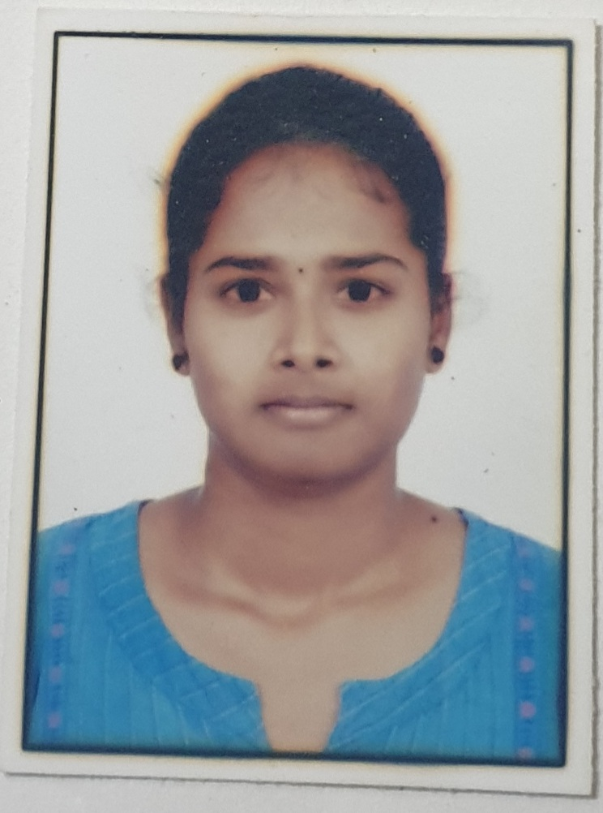

Divya Guthikonda
E-MAIL: divya@gmail.com
CONTACT: 9900887766
Career Objective
To have a growth oriented and challenging career, where I can contribute my knowledge and skills to the organization and enhance my experience through continuous learning.
Academic Details
- I have completed my MCA at Raja Bahadur Venkata Rama Reddy Institute of Technology.
- I have completed my Degree at Siddhartha Degree College For Women at Dilsuknagar with 96%.
- I have completed my Intermediate at Telangana State Model Junior College at Bongloor with 91%.
- I have completed my SSC at Little Angel's Convent School at Hayathnagar with 95%.
Hobbies
Strengths
- Responsible towards work.
- Positive Thinking & Self Confidence.
Personal Details
- Father Name : Krishna Rao
- Mother Name : Rani
- Date of Birth : 22/07/1999
- Nationality : Indian
- Languages Known : English,Telugu, Hindi